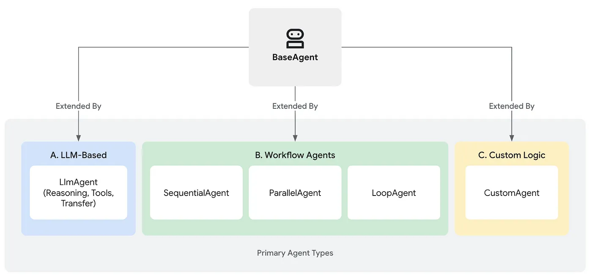

Last Updated: 2025-07-11
In the Agent Development Kit (ADK), an Agent is an independent unit that autonomously performs tasks, interacts with users, and collaborates with other agents to reach its goals.
All agents are built upon the fundamental BaseAgent class. From this base, agents are typically developed into one of three core categories:
Core Agent Types
- LLM Agents: These are the thinkers 🧠. They use Large Language Models to understand, reason, and make dynamic decisions, making them perfect for tasks that require flexibility and natural language processing.
- Workflow Agents: These are the organizers 📋. They manage how other agents execute tasks in predictable, structured patterns like sequences, parallel operations, or loops, without using an LLM for control.
- Custom Agents: These are the specialists 🛠️. Built by directly extending BaseAgent, they are created for unique, highly tailored tasks that don't fit into the other categories, allowing for specific logic and integrations.

Multi-Agent Systems
There are two main types of multi-agent systems:
- Conversational - user interacts via chat, control is passed between agents
- Workflow - typically run programmatically, agents are arranged in a workflow to perform a task
We will take a look one of each of these types. The Coordinator Pattern is a typical conversational multi-agent system. The Critique and Iterative Refinement Patterns are often used together in a multi-agent workflow.
The common theme in both examples is the use of sub_agents.
The Coordinator pattern uses a central agent to manage and delegate tasks to a team of specialized sub-agents. This central "Coordinator" agent assesses incoming user requests and, based on the descriptions of the available sub-agents, routes the request to the most suitable specialist for handling.
This process, known as delegation, relies on the Large Language Model's (LLM) ability to match the user's query with the most relevant sub-agent's description. Therefore, having clear and distinct descriptions for each specialized agent is crucial for the Coordinator to effectively route tasks and ensure the right agent handles the right job.
Create a file named agent.py in a new agent folder named helpdesk-agent.
helpdesk-agent/agent.py
from google.adk.agents import LlmAgent
feature_agent = LlmAgent(
name="feature_suggestions_agent",
model="gemini-2.0-flash",
description="Handles feature suggestions.",
instruction="""
Process user requests related to feature suggestions.
Collect the following information:
- User's name
- Feature suggestion details
- Contact information
- Any additional comments
Respond with a confirmation message once the information is collected.
""",
)
support_agent = LlmAgent(
name="support_agent",
model="gemini-2.0-flash",
description="Handles technical support requests.",
instruction="""
Process user requests related to technical support.
Collect the following information:
- User's name
- Issue description
- Expected result and actual result
- Contact information
Respond with a confirmation message once the information is collected.
""",
)
root_agent = LlmAgent(
name="helpdesk_coordinator",
model="gemini-2.0-flash",
instruction="Route user requests: Use feature_suggestions_agent for feature suggestions, support_agent for technical problems.",
description="Main help desk router.",
sub_agents=[feature_agent, support_agent]
)
Don't forget that you will also need to add an init file:
helpdesk-agent/__init__.py
from . import agentRun the agent via the web UI. Notice how you are transferred to different agents depending on your request.
In a Critique pattern, often called a "Generator-Critic" model, one agent creates an initial piece of work, and a second agent reviews and critiques it. This is a sequential, two-step process where the first agent (the Generator) produces an output, and the second (the Critic) evaluates it to enhance its quality or accuracy.
The Refinement pattern takes this a step further by creating an iterative loop. In this structure, one or more agents work on a task repeatedly, progressively improving the output with each cycle. The process continues until the result meets a specific quality standard or a set maximum number of iterations has been completed. This pattern is ideal for tasks that benefit from gradual enhancement, like refining code or a developing a detailed plan.
These patterns are typically used in a workflow agent (run programmatically), but we can test the agents via the ADK web UI.
.
Create a file named agent.py in a new agent folder named story-workflow.
story-workflow/agent.py
from google.adk.agents import LoopAgent, LlmAgent, SequentialAgent
from google.adk.tools.tool_context import ToolContext
GEMINI_MODEL = "gemini-2.0-flash"
# --- State Keys ---
STATE_CURRENT_DOC = "current_document"
STATE_CRITICISM = "criticism"
COMPLETION_PHRASE = "No major issues found."
# --- Tool Definition ---
def exit_loop(tool_context: ToolContext):
"""Call this function ONLY when the critique indicates no further changes are needed, signaling the iterative process should end."""
print(f" [Tool Call] exit_loop triggered by {tool_context.agent_name}")
tool_context.actions.escalate = True
return {}
# --- Agent Definitions ---
# STEP 1: Initial Writer Agent (Runs ONCE at the beginning)
initial_writer_agent = LlmAgent(
name="initial_writer_agent",
model=GEMINI_MODEL,
include_contents='none',
instruction=f"""
You are a Creative Writing Assistant tasked with starting a story.
Write the *first draft* of a short story (aim for 2-4 sentences).
Output *only* the story/document text. Do not add introductions or explanations.
Base the content *only* on the topic provided below. Try to introduce a specific element (like a character, a setting detail, or a starting action) to make it engaging.
Topic:
""",
description="Writes the initial document draft based on the topic, aiming for some initial substance.",
output_key=STATE_CURRENT_DOC
)
# STEP 2a: Critic Agent (Inside the Refinement Loop)
critic_agent_in_loop = LlmAgent(
name="critic_agent",
model=GEMINI_MODEL,
include_contents='none',
instruction=f"""You are a Constructive Critic AI reviewing a short document draft (typically 2-6 sentences). Your goal is balanced feedback.
**Document to Review:**
```
{{current_document}}
```
**Task:**
Review the document for clarity, engagement, and basic coherence according to the initial topic (if known).
IF you identify 1-2 *clear and actionable* ways the document could be improved to better capture the topic or enhance reader engagement (e.g., "Needs a stronger opening sentence", "Clarify the character's goal"):
Provide these specific suggestions concisely. Output *only* the critique text.
ELSE IF the document is coherent, addresses the topic adequately for its length, and has no glaring errors or obvious omissions:
Respond *exactly* with the phrase "{COMPLETION_PHRASE}" and nothing else. It doesn't need to be perfect, just functionally complete for this stage. Avoid suggesting purely subjective stylistic preferences if the core is sound.
Do not add explanations. Output only the critique OR the exact completion phrase.
""",
description="Reviews the current draft, providing critique if clear improvements are needed, otherwise signals completion.",
output_key=STATE_CRITICISM
)
# STEP 2b: Refiner/Exiter Agent (Inside the Refinement Loop)
refiner_agent_in_loop = LlmAgent(
name="refiner_agent",
model=GEMINI_MODEL,
# Relies solely on state via placeholders
include_contents='none',
instruction=f"""You are a Creative Writing Assistant refining a document based on feedback OR exiting the process.
**Current Document:**
```
{{current_document}}
```
**Critique/Suggestions:**
{{criticism}}
**Task:**
Analyze the 'Critique/Suggestions'.
IF the critique is *exactly* "{COMPLETION_PHRASE}":
You MUST call the 'exit_loop' function. Do not output any text.
ELSE (the critique contains actionable feedback):
Carefully apply the suggestions to improve the 'Current Document'. Output *only* the refined document text.
Do not add explanations. Either output the refined document OR call the exit_loop function.
""",
description="Refines the document based on critique, or calls exit_loop if critique indicates completion.",
tools=[exit_loop], # Provide the exit_loop tool
output_key=STATE_CURRENT_DOC # Overwrites state['current_document'] with the refined version
)
# STEP 2: Refinement Loop Agent
refinement_loop = LoopAgent(
name="refinement_loop_agent",
# Agent order is crucial: Critique first, then Refine/Exit
sub_agents=[
critic_agent_in_loop,
refiner_agent_in_loop,
],
max_iterations=5 # Limit loops
)
# STEP 3: Overall Sequential Pipeline
root_agent = SequentialAgent(
name="iterative_story_refinement_agent",
sub_agents=[
initial_writer_agent, # Run first to create initial doc
refinement_loop # Then run the critique/refine loop
],
description="Writes an initial document and then iteratively refines it with critique using an exit tool."
)When testing, enter a single word or sentence to describe the topic of a story. Examples:
- "Herbie the old racing beetle"
- "A mug named Jake"
- "F1 racer"
That's a wrap.
Find out more about multi-agent techniques and patterns in the docs: